2015-07-07 - Nº 10
Editorial
Passaram-se dois meses e já estamos na Newsletter Nº 10. Esta apresenta o formato habitual.
Esta Newsletter encontra-se mais uma vez disponível no sistema documenta do altLab. Todas as Newsletters encontram-se indexadas no link.
Esta Newsletter tem os seguintes tópicos:
- Novidades da Semana
- Ciência e Tecnologia
- Cursos MOOC
- Modelos 3D
- Open Source
- Circuitos
- Artigo do Maker
- Compras
Nesta Newsletter vamos falar do projeto de um Scanner 3D de baixo custo. É apresentado o pacote de software Open Source LibreOffice e iremos construir um circuito para testar transístores bipolares.
 João Alves ([email protected])
João Alves ([email protected])
O conteúdo da Newsletter encontra-se sob a licença  Creative Commons Attribution-NonCommercial-ShareAlike 4.0 International License.
Creative Commons Attribution-NonCommercial-ShareAlike 4.0 International License.
Novidades da Semana ^
The magpi issue 35 - July 2015
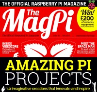
"The July edition of the official Raspberry Pi magazine has arrived. Here are just a few highlights: Amazing Raspberry Pi projects; 10 imaginative creations that innovate and inspire; Making games on Pi (the easy way); Introducing Pygame Zero: Making games has never been easier; The making of VideoCore; The Raspberry Pi engineering team reveals all; 22 pages of essential guides; Build an Internet radio, conquer the command line and much more"
New Horizons Team Responds to Spacecraft Anomaly
"The New Horizons spacecraft experienced an anomaly this afternoon that led to a loss of communication with Earth. Communication has since been reestablished and the spacecraft is healthy. The mission operations center at the Johns Hopkins University Applied Physics Laboratory, Laurel, Maryland, lost contact with the unmanned spacecraft -- now 10 days from arrival at Pluto -- at 1:54 p.m. EDT, and regained communications with New Horizons at 3:15 p.m. EDT, through NASA’s Deep Space Network."
Sorry Ikea, This Robotic Arm Prints Furniture Any Shape or Size I Want
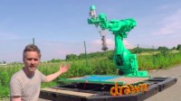
"Meet Galatéa, the honking, seafoam-colored robot arm that looks like road construction equipment. “She” was invented by engineer Sylvain Charpiot, founder of French startup Drawn. Galatéa is a large-scale 3D printer, formerly an industrial robot that worked in a car factory, that makes fully recyclable furniture that’s limited only by the imagination. She heats plastic (Drawn says it’s the same kind used in Legos) at over 440 degrees Fahrenheit to make simple furniture. Right now, objects can reach six-and-a-half feet long and four feet high."
-
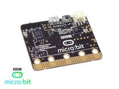
"The BBC has unveiled the BBC micro:bit, a pocket-sized codeable computer with motion detection, a built-in compass and Bluetooth technology, which is to be given free to every child in year 7 or equivalent across the UK. A collaboration between 29 partners, the micro:bit is the BBC's most ambitious education initiative in 30 years, with an ambition to inspire digital creativity and develop a new generation of tech pioneers. The UK currently faces a critical skills shortage in the technology sector and the BBC and partners aim to help change that."
Ciência e Tecnologia ^
Graphene gets bright: World's thinnest lightbulb developed
"Led by Young Duck Kim, a postdoctoral research scientist in James Hone's group at Columbia Engineering, a team of scientists from Columbia, Seoul National University (SNU), and Korea Research Institute of Standards and Science (KRISS) reported today that they have demonstrated—for the first time—an on-chip visible light source using graphene, an atomically thin and perfectly crystalline form of carbon, as a filament. They attached small strips of graphene to metal electrodes, suspended the strips above the substrate, and passed a current through the filaments to cause them to heat up."
Cockroach-inspired robot uses body streamlining to negotiate obstacles
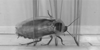
"Researchers at University of California, Berkeley, have taken inspiration from the cockroach to create a robot that can use its body shape to manoeuvre through a densely cluttered environment. Fitted with the characteristic rounded shell of the discoid cockroach, the running robot can perform a roll manoeuvre to slip through gaps between grass-like vertical beam obstacles without the need for additional sensors or motors."
A New High-Res 3D Printer Can Print Objects Smaller Than Blood Cells
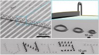
"3D printing technology has recently attracted significant media attention. However, there seems to be a multitude of problems with current 3D printers, as they have failed to deliever on its promise to revolutionize manufacturing due to the higher costs, long print times, as well as low resolution."
Cursos MOOC ^
- An Introduction to Interactive Programming in Python (Part 2) - Começa a 11 de Julho.
- Introduction to Cyber Security - Começa a 13 de Julho.
- Electronic Interfaces: Bridging the Physical and Digital Worlds - Começa a 13 de Julho.
- Signals and Systems, Part 2 - Começa a 23 Julho.
- Creative Coding - Começa a 3 de Agosto.
- Introduction to Robotics - Começa a 10 de Agosto.
Modelos 3D ^
Com a disponibilidade de ferramentas que permitem dar azo a nossa imaginação na criação de peças 3D e espaços como o thingiverse para as publicar, esta rubrica apresenta alguns modelos selecionados que poderão ser úteis.
Parametric Box with Latch (http://www.thingiverse.com/thing:914349)
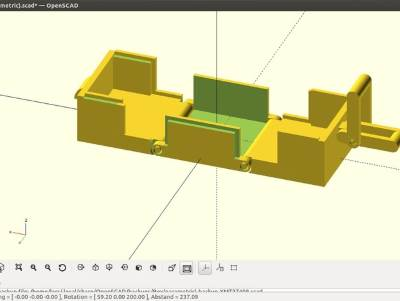
A simple box to store small things. The inner dimensions can be adjusted and the latch on top makes sure that it doesn't open when it shouldn't.
Primitive OpenSCAD Font (http://www.thingiverse.com/thing:909306)
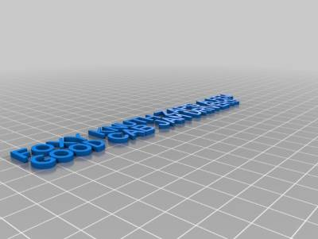
Sans-serif vector font designed using OpenSCAD primitives
3D-printable sand play set (http://www.thingiverse.com/thing:909118)
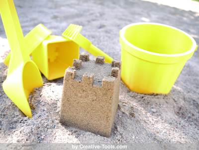
This is the perfect set of 3D models for a day at the beach or at the park with the kids.
3D-print the set as is, or scale the items to fit your 3D printer’s build plate.
Contains five easy-to-print 3D objects: a sifter, a shovel, a rake, a bucket and a mold for making sandcastle towers.
Open Source ^
LibreOffice
O Software Open Source da semana é um pacote de produtividade designado por LibreOffice. Este pacote de software é ativamente desenvolvido pela comunidade sendo gerido pela Document Foundation. Trata-se de uma pacote de ferramentas que permitem o trabalho num ambiente de escritório. Encontra-se atualmente na versão 4.4.4. A página oficial deste pacote de software encontra-se neste Link. Trata-se de um pacote de ferramentas que funciona em ambiente GNU/Linux, Windows e Mac OS X.
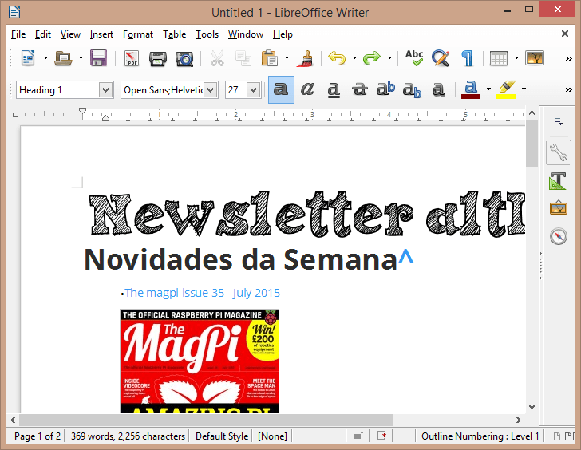
O LibreOffice tem diversas ferramentas para endereçar diversas necessidades:
- Writer - Editor de Texto
- Calc - Folha de Cálculo
- Impress - Motor de Apresentações
- Draw - Aplicação de desenho e flowcharting
- Base - Base de dados e front-end de base de dados
- Math - Editor de formulas matemáticas
As várias ferramentas permitem a importação e exportação para os formatos Open (ODF) assim como para os formatos proprietários do Microsoft Word, Excel, Powerpoint e Publisher. Através do uso de extensões é possível extender mais as funcionalidades destas aplicações. Permitem a exportação direta para o formato PDF sem ferramentas adicionais.
Existe uma versão portable para Windows que não obriga a que seja instalada no computador e que pode ser executada a partir de uma pen USB. Esta versão pode ser descarregada a partir deste link.
Trata-se de uma ferramenta que substitui praticamente todas as funcionalidades de outros pacotes comerciais.
Links úteis:
- Feature Comparison: LibreOffice - Microsoft Office
- Document Foundation’s wiki
- LibreOffice: Uma alternativa gratuita ao Microsoft Office
Circuitos ^
Aqui é apresentado um circuito simples que poderá ser construído com componentes.
Testador de Transístores
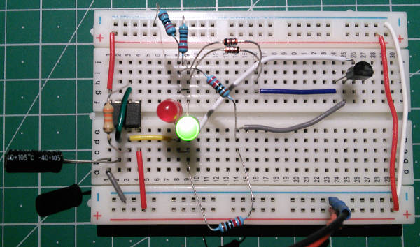
Hoje irá ser apresentado um circuito para testar transístores bipolares PNP e NPN. Trata-se de um circuito baseado no 555. Este circuito permite verificar o tipo de transístor que temos assim como se este está a funcionar corretamente ou não. Da forma como o circuito foi montado, o 555 está a funcionar a 2 Hz. O pino 3 oscila entre 0 e um valor positivo de tensão. Na outra ponta do circuito é feito um divisor de tensão que tem aproximadamente 4,5V no meio. Isto permite que os LEDs acendam de forma alternada quando não existe um transístor ligado.
Se um transístor a funcionar for ligado, criará um curto no par de LEDs quando a tensão vai numa direção e apenas um dos LEDS piscará. Caso seja PNP piscará o vermelho, caso seja NPN piscará o verde. Se o transístor está aberto, ambos os LEDs irão piscar e se o transístor estiver fechado nenhum dos LEDs piscará.
Esquemático
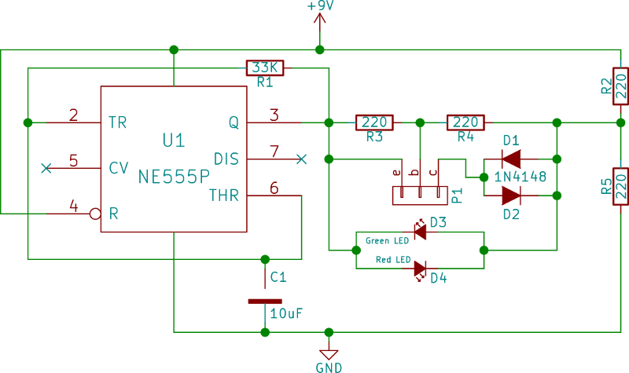
Os pinos c, b, e correspondem ao c - Collector, b - Base, e - Emissor do transístor.
Nota: O circuito foi baseado no circuito apresentado nesta página
Componentes (BOM):
- NE555P (U1)
- 4x Resistências de 220 Ohms (R2-R5)
- 1x Resistência de 33K (R1)
- 1x Condensador Electrolítico de 10uF (C1)
- 2x Diodos 1N4148 (D1-D2))
- 1x LED vermelho (D3)
- 1x LED verde (D4)
- 1x Bateria de 9V
Para os testes:
- Transístores Bipolares PNP e NPN diversos (Ex: 2N2222, 2N2907, etc..)
Pin-out dos IC
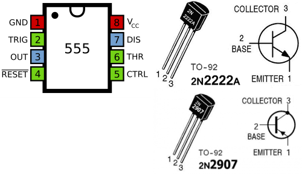
Links úteis:
- Electronics Components: How the 555 Timer Chip Works
- 555 timer IC
- Bipolar junction transistor
- Transistor Test Type and Polarity
Artigo do Maker ^
Projeto interessante publicado por um maker.
Scanner Laser 3D de baixo custo
O projeto de maker da semana foi desenvolvido pelo Fabio Ferretti e publicado no intructables e é um scanner 3D para digitalização de peças de pequena dimensão. O custo do projeto é de cerca de 25 € o que pode ser bastante interessante. Este projecto encontra-se neste link.
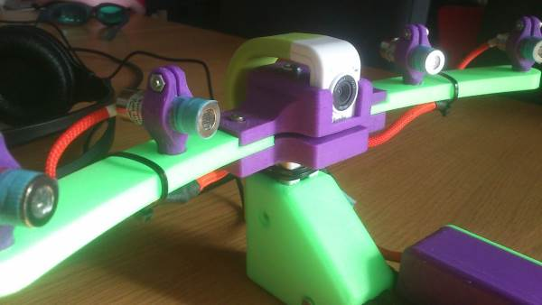
Passo 1: o que é necessário
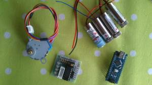 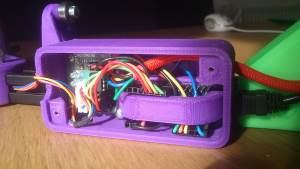 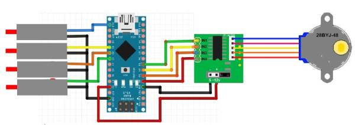
A lista de materiais necessários é esta:
- Alguns parafusos M3 (de 16 e 20mm)
- Alguns parafusos M4 (de 12 e 20mm)
- 1 Arduino Nano
- 1 Motor de passo - tipo 28BYJ-48 e um controlador (ULN2003)
- 1 a Laser de Linha de 5V
- 1 Hercule HD Twist (ou outra câmara HD) - Com ligação USB
- perfil 20x20
Alguns modelos STL impressos em impressora 3D:
- 1x arm_left.stl
- 1x box.stl
- 1x box_door.stl
- 1x box_arduino_clamp.stl
- 1x arm_right.stl
- 1x CORNER.stl
- 1x MOTOR_MOUNT.stl
- 1 a 4x laser_holder.stl
- 1x Camera_HOLDER_LOWER_PART.stl
- 1x Camera_HOLDER_UPPER_PART.stl
- 1x center_axe_MINIMAL.stl ou 1x table_AXLE.stl (OPCIONAL)
- 3x roller_baseV2.stl
As peças em 3D também se encontram no Thingiverse
Podem ser impressos 12 M4_tslot_nut.stl se quiser usar um perfil 20x20 e ainda não tiver nenhum. Pode ser necessário alterar o suporte para a câmara se esta não for uma Hercule HD Twist
Passo 2 - Firmware
Para que o firmware possa ser instalado no Arduino Nano é preciso o Arduino IDE ou outro editor de sketchs.
O Firmware encontra-se neste link. Também é necessária a biblioteca AccelStepper que se encontra neste link
Deverá editar-se o ficheiro configuration.h para coincidir com as ligações que foram feitas. Pode ser feito o upload para o Arduino Nano.
Depois de carregado ligue o nano ao Arduino IDE para testar:
- Escreva "Sardauscan" – O Arduino deverá responder "yes"
- Testar o Stepper - Escreva "T R 100" - E a mesa deve rodar 100 passos.
- Testar o laser - Escreva "L 0 1" para o primeiro (0) laser acender (1) - o laser deverá acender.
Se alguma coisa não funcionar deverá verificar as ligações.
Passo 3 - Software e Calibrações
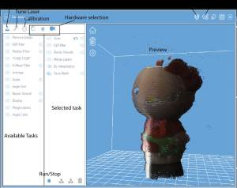 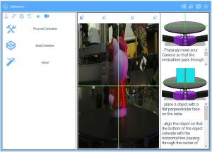
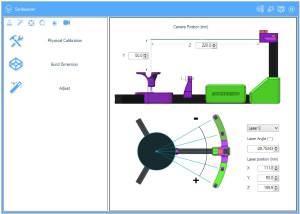 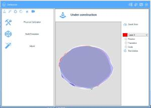
Para instalar o Software Sardauscan, ir ao link e descarregar o ultimo binário. Extrair e lançar o executável.
No interface principal deverá observar 3 icons vermelhos - um para a mesa, uma para os lasers e um para a câmara. Clique nos três para ligar o hardware (clique com o botão direito para desligar)
Agora que o hardware está pronto e o software ligado vamos para a parte complicada: calibração.
A calibração tem três passos:
- Calibração Manual
- A dimensão de construção
- Correção por ajuste
Tenha atenção durante a calibração pois a qualidade do resultado final depende dela.
Para calibrar:
- Carregue no icon de alvo e no botão físico.
- Mova a câmara de forma a que a vertical na janela de preview atravesse exactamente o centro da mesa.
- Clique no centro da mesa na janela de preview. As linhas ajudam a alinhar o objeto a calibrar.
- Coloque o objeto de calibração na mesa com a aérea lisa virada para a câmara - use a linha horizontal para ajudar.
- Carregue no icon do primeiro laser para acender este laser. Alinhe a linha com a linha vertical.
- Repetir o passo para todos os lasers.
Dimensão da construção:
- Carregar no botão "build dimension" e digite a dimensão da construção.
Ajuste:
- Como uma calibração perfeita é difícil de alcançar, especialmente com um numero elevado de lasers, o passo de correção ajudará a corrigir erros anteriores.
- Coloque o objeto de calibração no centro da mesa e clique "quick scan".
- Quando a digitalização estiver completa aparecerá a vista de topo. Cada cor corresponde a um laser diferente.
- O Objectivo é sobrepor o melhor possível as digitalizações dos diferentes lasers: selecionar um laser na caixa de escolha e rodar (com a tecla esquerda do rato), escala (tecla do meio do rato), e mover (tecla direita do rato) a digitalização.
A peça de calibração encontra-se neste link.
Passo 4 - A interface
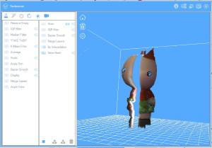
Para ser evolutivo o software foi desenhado por processos e tarefas.
Quando o programa é aberto pode verificar-se na esquerda uma lista de tarefas disponíveis - podem ser arrastadas para a lista de processos na direita e executados carregando no icon "Play".
Outros artigos/projetos interessantes de ler:
Compras ^
Artigos do ebay ou de outras lojas online que poderão ser úteis em projetos.
NPN Transistor TO-92 2N2222A 2N2222 100Pcs Hot Sales New High Quality
(http://www.ebay.co.uk/itm/201094966517) - £0.99
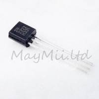
100PCS NE555 555 DIP-8 IC Timers NEW GOOD QUALITY
(http://www.ebay.co.uk/itm/251672591791) - US $4.61
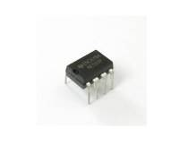
- Manufacturer:SGS-THOMSON (ST)
- Manufacturer Part No:NE555N
- Package / Case:PDIP-8
- Frequency:500KHz
- Type Timer:Single
- Voltage Supply:4.5V ~ 16V
- Mounting Type:Through Hole
Lot 100Pcs/500Pcs/1000Pcs New 1N4148 IN4148 DO-35 Switching Signal Doide
(http://www.ebay.co.uk/itm/371121211255) - £0.99
- 100% brand new and high quality
- Material: Silicon
- Color: As the picture show
- This kind of diode is small bulk, boast high speed, reliability and long life
That's all Folks!